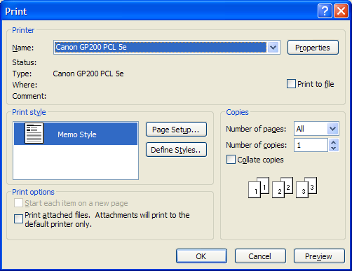

title: Print Dialog Box description: The Print dialog box lets the user select options for a particular print job. ms.assetid: 34f69b25-8a89-4322-af4c-a80b85a4a973 keywords:
The Print dialog box lets the user select options for a particular print job. For example, the user can specify the printer to use, the range of pages to print, and the number of copies.
You can use the PrintDlgEx function to display a Print Property Sheet, which has a General page containing controls similar to the Print dialog box. The property sheet can also have additional application-specific and driver-specific property pages following the General page.
You create and display a Print dialog box by initializing a PRINTDLG structure and passing the structure to the PrintDlg function.
The following illustration shows a typical Print dialog box.

If the user clicks the OK button, PrintDlg returns TRUE and uses the PRINTDLG structure to return information about the user's selections. For example, the hDevMode and hDevNames members typically return global memory handles for and DEVNAMES structures. You can use the information in these structures to create a device context or an information context for the selected printer.
If the user cancels the Print dialog box or an error occurs, PrintDlg returns FALSE. You can determine the cause of an error by using the CommDlgExtendedError function to retrieve the extended error value.
The Print dialog box includes a Print Range group of radio buttons that indicate whether the user wants to print all pages, a range of pages, or only the selected text. Before calling PrintDlg, you can set one of the PD_ALLPAGES, PD_SELECTION, or PD_PAGENUMS flags to indicate which button is initially selected. When PrintDlg returns TRUE, the function sets one of these flags to indicate the user's selections. If PD_PAGENUMS is set, the nFromPage and nToPage members of the PRINTDLG structure contain the starting and ending pages specified by the user. To disable the Pages radio button and its associated From and To edit controls, set the PD_NOPAGENUMS flag. To disable the Selection radio button, set the PD_NOSELECTION flag.
The dialog box includes an edit control in which the user can type the number of copies to print. If the hDevMode member of the PRINTDLG structure is non-NULL, the dmCopies member of the structure specifies the initial value for this edit control. If hDevMode is NULL, the nCopies member of the PRINTDLG structure specifies the initial value. When PrintDlg returns, nCopies typically indicates the number of copies specified by the user. However, if you set the PD_USEDEVMODECOPIESANDCOLLATE flag when you create the dialog box, nCopies is always set to 1 on return and the dmCopies member of DEVMODE indicates the number of copies to print.
The Collate check box indicates whether the user wants to collate the pages if multiple copies are being printed. The PD_COLLATE flag is set if the Collate check box is selected. If your application does not support multiple copies or simulated collation, set the PD_USEDEVMODECOPIESANDCOLLATE flag in the Flags member of the PRINTDLG structure. This disables the Collate check box and the Number of Copies edit control unless the printer driver supports multiple copies and collation.
The Print To File check box indicates whether the user wants to send output to a file rather than to a printer. You can set the PD_PRINTTOFILE flag so the check box is initially selected. To hide the check box, set the PD_HIDEPRINTTOFILE flag. To disable it, set the PD_DISABLEPRINTTOFILE flag. If the user selects the Print To File option, PrintDlg sets the PD_PRINTTOFILE flag and returns "FILE:" at the offset indicated by the wOutputOffset member of the DEVNAMES structure. When you call the function to start the printing operation, specify this "FILE:" string in the lpszOutput member of the structure. Specifying this string causes the print subsystem to query the user for the name of the output file.
By default, the Print dialog box initially displays information about the current default printer. To display information for another installed printer, initialize a and a DEVNAMES structure and assign the global memory handle to the structure to the hDevMode and hDevNames members. The device name you specify in the dmDeviceName member of the DEVMODE structure and in the wDriverOffset member of the DEVNAMES structure must identify a printer device that is also listed in the [Devices] section of the Win.ini file. If the device is not listed, PrintDlg returns an error.
You can direct PrintDlg to create a device context or information context for the printer by setting the PD_RETURNDC or PD_RETURNIC flag in the Flags member of the PRINTDLG structure. The function returns a handle to the device context or information context in the hDC member. If you use the PD_RETURNDC flag, you can use the device context to generate output for the printer.
To retrieve information about the default printer without displaying the Print dialog box, set the PD_RETURNDEFAULT flag. In this case, PrintDlg returns immediately after setting the hDevMode and hDevNames members to handles for structures containing the information.
By default, PrintDlg displays message boxes when errors occur. For example, the function displays an error message if no printers are installed. To prevent the function from displaying these warning messages, set the PD_NOWARNING flag.
The following topics are discussed in this section.
You can provide a custom template for the Print dialog box, for example, if you want to include additional controls that are unique to your application. The PrintDlg function uses your custom template in place of the default template.
To provide a custom template for the Print dialog box:
If your custom template is a resource in an application or dynamic-link library, set the PD_ENABLEPRINTTEMPLATE flag in the Flags member. Use the hInstance and lpPrintTemplateName members of the structure to identify the module and resource name.
-Or-
If your custom template is already in memory, set the PD_ENABLEPRINTTEMPLATEHANDLE flag. Use the hPrintTemplate member to identify the memory object that contains the template.
You can provide a PrintHookProc hook procedure for the Print dialog box. The hook procedure can process messages sent to the dialog box. It can also send messages to the dialog box. If you use a custom template to define additional controls, you must provide a hook procedure to process input for your controls.
To enable a hook procedure for the Print dialog box:
After processing its WM_INITDIALOG message, the dialog box procedure sends a WM_INITDIALOG message to the hook procedure. The lParam parameter of this message is a pointer to the PRINTDLG structure used to initialize the dialog box.
You can create and display a Print Setup dialog box by setting the PD_PRINTSETUP flag in a call to the PrintDlg function. However, the Print Setup dialog box has been superseded by the Page Setup dialog box and should not be used in new applications.
The following flags apply only to the Print Setup dialog box:
Â
Â